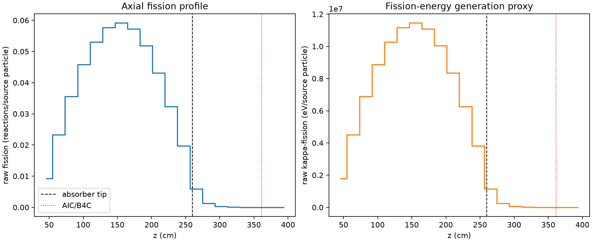
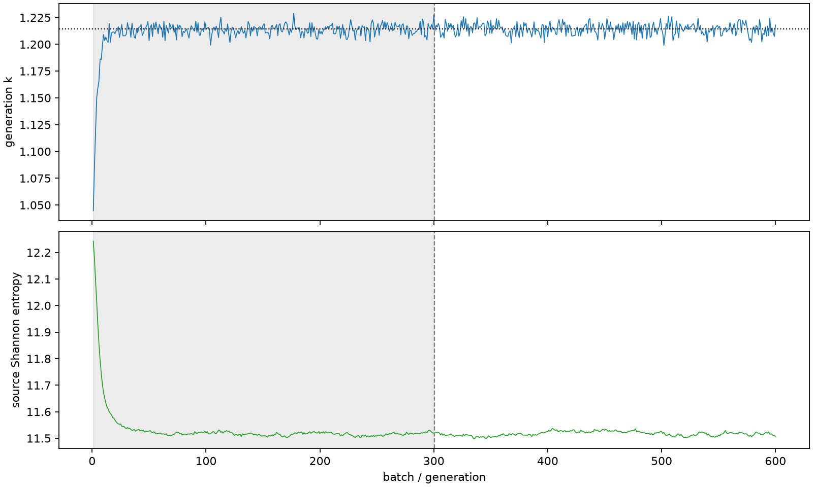

| field | value |
|---|---|
| experiment | V2-STAGE_128_OGRENCI_03-0023 |
| k | 1.2143121125887324 |
| MC standard error | 0.00019392431248628614 |
| seconds | 930.9374717480023 |
| acceptance | not_assessed |
| convergence | review_required |
Completed is output integrity only; physical and statistical review required. Zero tallies do not prove zero production or zero uncertainty.
| diagnostic | value |
|---|---|
| geometric fuel voxels | 5280 |
| zero fission tally voxels | 234 |
| low signal fuel voxels | 1090 |
| low signal fission share | 7.995713954057519e-05 |
| low signal kappa share | 7.998017059133568e-05 |
| important fission share | 0.9501299323932159 |
| previous filter included | 4190 |
| duration estimate s | 1562.5173488400023 |
| actual minus estimate s | -631.5798770920001 |
| fission relative MC error | statistics |
|---|---|
| all_geometric_fuel | {"voxels": 5280, "positive_mean_voxels": 5046, "zero_mean_voxels": 234, "undefined_relative_error_voxels": 234, "median": 0.011485014919718303, "p95": 0.7419280392971342, "maximum": 1.0000000000000002} |
| low_signal | {"voxels": 1090, "positive_mean_voxels": 856, "zero_mean_voxels": 234, "undefined_relative_error_voxels": 234, "median": 0.5365685703442971, "p95": 1.0, "maximum": 1.0000000000000002} |
| important_95pct | {"voxels": 2796, "positive_mean_voxels": 2796, "zero_mean_voxels": 0, "undefined_relative_error_voxels": 0, "median": 0.008129448713285643, "p95": 0.012162161117287412, "maximum": 0.014631943029633027} |
| outside_previous_filter | {"voxels": 1090, "positive_mean_voxels": 856, "zero_mean_voxels": 234, "undefined_relative_error_voxels": 234, "median": 0.5365685703442971, "p95": 1.0, "maximum": 1.0000000000000002} |
| kappa_fission relative MC error | statistics |
|---|---|
| all_geometric_fuel | {"voxels": 5280, "positive_mean_voxels": 5046, "zero_mean_voxels": 234, "undefined_relative_error_voxels": 234, "median": 0.01147238384267089, "p95": 0.7420131495467063, "maximum": 1.0000000000000002} |
| low_signal | {"voxels": 1090, "positive_mean_voxels": 856, "zero_mean_voxels": 234, "undefined_relative_error_voxels": 234, "median": 0.53573709080914, "p95": 1.0, "maximum": 1.0000000000000002} |
| important_95pct | {"voxels": 2796, "positive_mean_voxels": 2796, "zero_mean_voxels": 0, "undefined_relative_error_voxels": 0, "median": 0.008121011319548902, "p95": 0.01214882469654896, "maximum": 0.014615676613270654} |
| outside_previous_filter | {"voxels": 1090, "positive_mean_voxels": 856, "zero_mean_voxels": 234, "undefined_relative_error_voxels": 234, "median": 0.53573709080914, "p95": 1.0, "maximum": 1.0000000000000002} |
| axial bin | fission share | kappa-fission share |
|---|---|---|
| 1 | 0.01874579070464503 | 0.018746599019029298 |
| 2 | 0.046963962127480975 | 0.046964018791200525 |
| 3 | 0.07183819226924944 | 0.07183789382156876 |
| 4 | 0.09233383251455388 | 0.09233344142989995 |
| 5 | 0.10706856960922725 | 0.1070682209874313 |
| 6 | 0.11628897080309095 | 0.11628830082697846 |
| 7 | 0.11926989560065011 | 0.11926929024783932 |
| 8 | 0.11548255792996928 | 0.11548209891576415 |
| 9 | 0.10456688918659494 | 0.10456637969120469 |
| 10 | 0.08701713838542594 | 0.08701635411595668 |
| 11 | 0.06528557355251745 | 0.06528538228890966 |
| 12 | 0.03974664844949859 | 0.03974653417553661 |
| 13 | 0.011876539419005204 | 0.011878891041753657 |
| 14 | 0.0026279105037528257 | 0.002628787161849597 |
| 15 | 0.0006539246239030318 | 0.0006541396576029644 |
| 16 | 0.00017639772551221176 | 0.00017644188619158986 |
| 17 | 4.4463266754607645e-05 | 4.447748711930175e-05 |
| 18 | 1.0876448476061164e-05 | 1.0880283634216326e-05 |
| 19 | 1.6744488063219568e-06 | 1.6755835441642195e-06 |
| 20 | 1.924308859206724e-07 | 1.9258698508236016e-07 |
Histories include the inactive-to-active transition at batch 300. kappa-fission approximates fission energy production, not total heat deposition.

